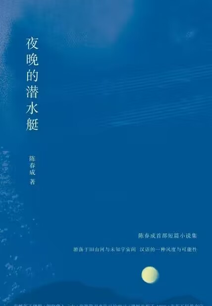

那些文字中关于阅读的意义
-
小王子
“有一天，我看了四十四次日落。你知道吗？人在难过的时候就会爱上看日落。”
"如果有人爱上一朵花，天上的星星有亿万颗，而这朵花只长在其中一颗上，这足以让他在仰望夜空时感到很快乐。他会告诉自己：‘在星空的某处有我的花。’但如果绵羊把花吃掉了，对他来说就等于所有的星星突然熄灭了！这也根本不重要吧！”"
-
挪威的森林
“如果你掉进了黑暗里， 你能做的，不过是静心等待， 直到你的双眼适应黑暗。
"每个人都有属于自己的一片森林， 也许我们 从来不曾去过， 但它一直在那里，总会在那里。 迷失的人迷失了， 相逢的人会再相逢。"
-

夜晚的潜水艇
"现在我有更好的方案：我可以想象出一个保险柜，把想象力想象成一些金块，将它们锁在柜中。再把密码设置成一个我当时不可能知道，若干年后才会知道的数字。比如我结婚的日期，2022年我的电话号码。这样我就能偶尔回味一下旧梦，来一场探险，怕沉溺其中，再把想象力锁回去就行了，设置一个新密码。但是当时欠考虑，毕竟年纪小。现在已经来不及了。我的想象力可能早就飞出了银河系，再也回不来了。 "
-
围城
“那些多情种在心底的爱、见在眼前的美，倘若连羡慕都不能，便何足珍惜？你欲取之，就当敢夺敢争；你欲舍之，就要学会彻底忘却。怎样做，全在于你自己。”
“生活中不能承受的重担，往往可以在艺术中化为玩具。”